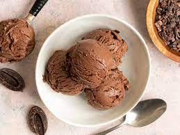

Chocolate IceCream
Description
Chocolate ice cream is a rich and decadent dessert that is loved by many. It is a frozen dessert made with cream,
sugar, cocoa powder or melted chocolate, and often vanilla extract. The mixture is churned and frozen to create a
smooth and creamy treat that is perfect for satisfying any chocolate cravings. Chocolate ice cream can be enjoyed on
its own or used as a base for other desserts such as milkshakes, sundaes, or even as an accompaniment to warm
chocolate cake. Whether enjoyed on a hot summer day or as a comforting dessert during colder months, chocolate ice
cream is a classic favorite that is sure to please any chocolate lover.
Ingredients
- 2 cups heavy cream
- 1 cup whole milk
- 3/4 cup granulated sugar
- 1/2 cup unsweetened cocoa powder
- 4 large egg yolks
- 1 teaspoon vanilla extract
Steps
- In a medium saucepan, whisk together the heavy cream, milk, sugar, and cocoa powder until smooth. Heat the
mixture over medium heat, stirring frequently, until it reaches a simmer.
- In a separate bowl, whisk together the egg yolks until smooth. Slowly pour about 1 cup of the hot cream mixture
into the egg yolks, whisking constantly, to temper the yolks and prevent them from curdling.
- Pour the egg mixture back into the saucepan with the remaining cream mixture and whisk to combine.
- Cook the mixture over medium heat, stirring constantly, until it thickens and coats the back of a spoon, about
5-7 minutes. Do not let the mixture boil.
- Remove the saucepan from heat and stir in the vanilla extract.
- Strain the mixture through a fine-mesh sieve into a large bowl, then cover and refrigerate until chilled, at
least 2 hours or overnight.
- Once the mixture is chilled, pour it into an ice cream maker and churn according to the manufacturer's
instructions until it is thick and creamy, usually about 20-25 minutes.
- Transfer the ice cream to a freezer-safe container and freeze until firm, at least 4 hours or overnight, before
serving.
- Serve and enjoy!